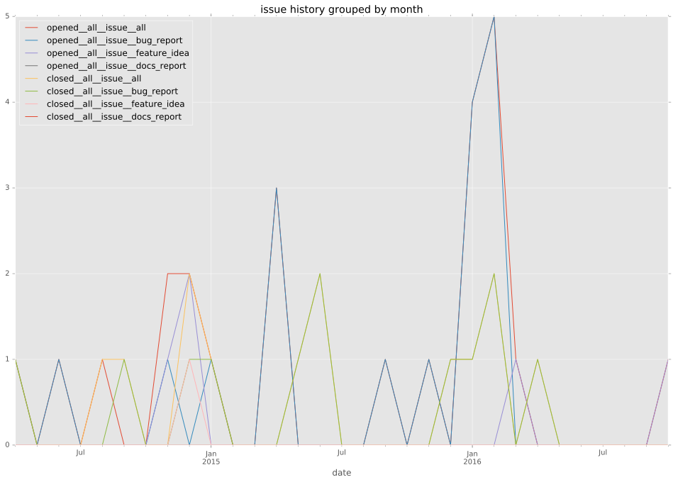
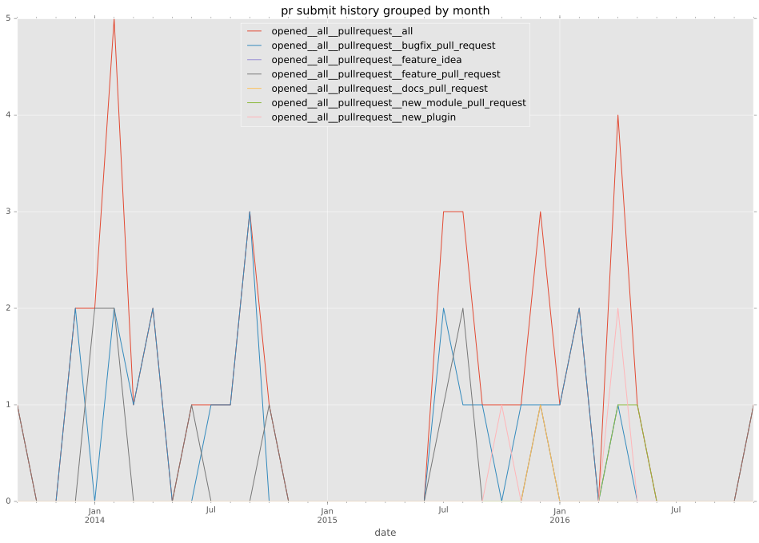
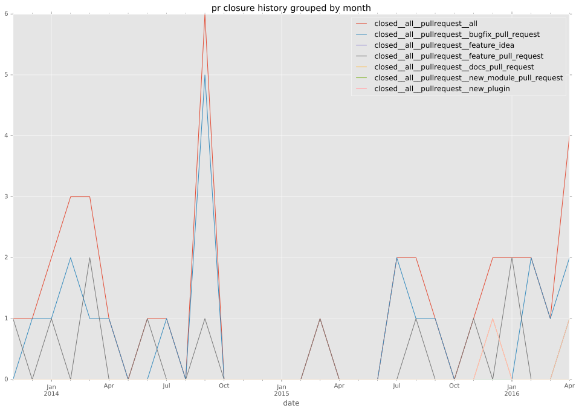

authors
- jsdalton
maintainers
- jsdalton
- alachaum
contributors
- alachaum : 7 commits
- mpdehaan : 3 commits
- quodlibetor : 9 commits
- steenzout : 3 commits
- abadger : 15 commits
- scottanderson42 : 2 commits
- bcoca : 4 commits
- sa2ajj : 1 commits
- Hypermanzer : 5 commits
- mjschultz : 1 commits
- voidfiles : 2 commits
- sspinner-gpsw : 2 commits
- jctanner : 3 commits
- jonasi : 10 commits
- semifocused : 4 commits
total issue counts
feature pull request: 15
docs report: 1
pullrequest: 40
docs pull request: 1
bugfix pull request: 21
feature idea: 5
issue: 23
new plugin: 2
bug report: 18
issue history

pullrequest history



days open by issue type
bugfix pull request
count: 29
std: 34.8804079268
min: 0
max: 181
median: 2.0
mean: 17.0
all
count: 69
std: 61.5530911893
min: 0
max: 248
median: 17.0
mean: 41.1594202899
pullrequest
count: 0
std: nan
min: nan
max: nan
median: nan
mean: nan
docs pull request
count: 2
std: 0.0
min: 2
max: 2
median: 2.0
mean: 2.0
docs report
count: 1
std: nan
min: 15
max: 15
median: 15.0
mean: 15.0
feature pull request
count: 21
std: 82.4321654742
min: 0
max: 248
median: 43.0
mean: 84.1904761905
feature idea
count: 2
std: 39.5979797464
min: 4
max: 60
median: 32.0
mean: 32.0
issue
count: 0
std: nan
min: nan
max: nan
median: nan
mean: nan
new plugin
count: 2
std: 31.8198051534
min: 4
max: 49
median: 26.5
mean: 26.5
bug report
count: 12
std: 47.3986158857
min: 0
max: 142
median: 11.5
mean: 36.9166666667
closures grouped by total days open